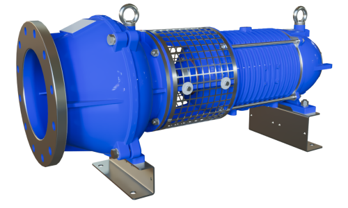

Envie o relatório
Escolha um CSV ou arquivo Excel (.xlsx) exportado com as leituras da bomba.
Monitoramento operacional
Envie as leituras e veja sinais persistentes que podem merecer inspeção.
Em poucas palavras
Escolha um CSV ou arquivo Excel (.xlsx) exportado com as leituras da bomba.
O sistema usa dias de referência e considera somente momentos em que o motor estava ligado.
Um aviso aparece quando vários sinais ficam fora do padrão pelo tempo definido. Ele orienta uma inspeção; não confirma uma falha.
Como interpretar: os avisos indicam condições que merecem inspeção; não confirmam uma falha nem garantem que toda falha será prevista.
Visão rápida
Resumo dos avisos persistentes encontrados nas leituras.
Indicador provisório
Selecione uma bomba no cabeçalho para ver a avaliação.
Bomba submersa Higra

Modelo visual interativo baseado na foto da bomba submersa apresentada pela Higra. O desenho é uma reconstrução aproximada; os destaques vermelhos apontam a região associada à regra, não confirmam uma falha física.
Histórico da bomba
A nota diária considera os avisos persistentes até o fim de cada dia.
Nenhum aviso foi confirmado neste período.
Por que a nota mudou?
Selecione uma bomba para ver os sinais e os motivos.
O que o sistema observa
Os avisos procuram combinações de sinais que persistem. Um pico sozinho não basta.
O que quer dizer “validar com antecedência”?
O sistema reproduz as leituras na ordem em que aconteceram. Comparamos a hora em que cada aviso foi confirmado com dois marcos do histórico: quando o evento começou e quando atingiu o limiar de alarme registrado. São medidas diferentes. Um aviso pode vir antes do limiar e ainda assim surgir depois do início do evento. Essa comparação avalia os quatro eventos conhecidos; não usa os horários deles para criar os avisos.
Etapa do desafio Higra
Cada regra combina os sensores relevantes com um tempo mínimo de persistência para reduzir avisos causados por oscilações breves.
Carregando regras…
Replay dos dados
Usa 1–8 de junho como referência e reproduz 9–30 de junho, sempre lendo o presente e o passado. As leituras futuras não entram no cálculo.
Importar e consultar
Envie leituras operacionais para atualizar o histórico usado pelo sistema.
Novo relatório
Aceita CSV ou Excel (.xlsx) · até 25 MB. O arquivo deve conter as colunas Data e Máquina.
Registros salvos
A referência inicial usa leituras de 1 a 8 de junho de 2026 e ignora períodos com rotação zerada.